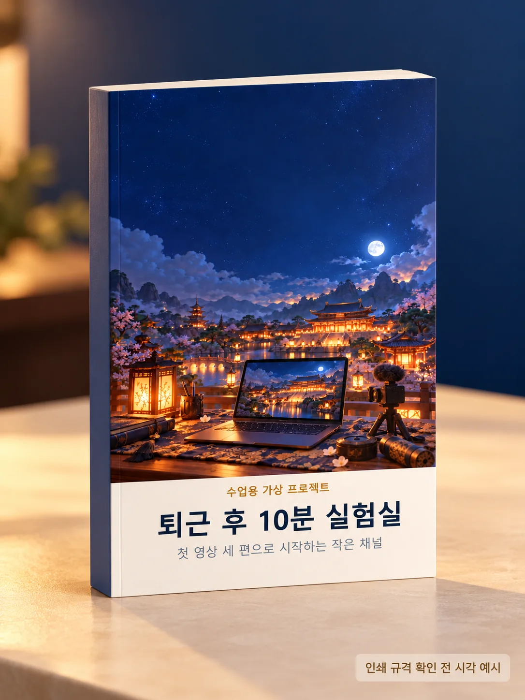

책상 위 물건 세 개만 남기기
자주 쓰는 물건을 고르고 나머지는 옆 상자에 넣어봅니다.
첫 영상 세 편으로 시작하는 작은 채널
큰 장비 없이도 퇴근 후 작은 실험 하나를 기록합니다. 일상에서 궁금했던 일을 직접 해보고, 과정과 느낀 점을 짧게 나누는 프로젝트입니다.

프로젝트 소개
무언가 시작하고 싶지만 준비만 하다가 하루를 보내는 사람을 위한 가상 실습입니다. 구독자 수보다 시청자가 얻을 경험을 먼저 생각하고, 직접 해본 과정과 느낀 점을 나눕니다.
자주 쓰는 물건을 고르고 나머지는 옆 상자에 넣어봅니다.
잠깐 스마트폰을 내려놓고 창밖 풍경을 관찰합니다.
재료 세 가지를 골라 간단한 간식을 만들고 느낌을 나눕니다.
미니북 본문
버튼을 눌러 원고의 본문을 펼쳐 읽을 수 있습니다.
머리말
큰 장비 없이도 퇴근 후 작은 실험 하나를 기록할 수 있습니다. 일상에서 궁금했던 일을 직접 해보고, 과정과 느낀 점을 짧게 나누는 수업용 가상 프로젝트입니다.
퇴근 후 남은 에너지가 많지 않은 사람을 떠올려봅니다. 거창한 도전 대신 오늘 바로 해볼 수 있는 행동 하나를 건네면 좋겠습니다.
채널을 소개할 때는 구독자 수보다 시청자가 얻을 경험을 먼저 설명합니다.
공통 형식: 궁금한 점 → 해보는 장면 → 예상과 달랐던 점
도입: 퇴근하면 아무것도 하기 싫어서, 오늘은 책상 위 물건을 세 개만 남겨보겠습니다.
과정: 손이 자주 가는 물건을 골라 나머지는 옆 상자에 넣습니다. 책상을 사용하는 모습을 짧게 찍습니다.
마무리: 정리가 잘됐다는 말보다 사용하면서 달라진 점을 한 가지 말합니다.
마지막 질문: 여러분이라면 무엇 세 개를 남기겠어요?
썸네일에는 정리 전후 사진을 한 장씩 놓고 제목은 짧게 적습니다.
영상에서 실제로 보여주는 내용과 제목을 맞춥니다. 결과가 예상과 달라도 그 과정이 이야기의 재료가 됩니다.
첫 공개 후에는 반응을 살펴 다음 실험의 질문을 고릅니다. 조회수를 보장하는 공식 대신 계속 찍을 수 있는 소재와 형식을 찾아봅니다.
이번 주에는 영상 하나를 끝까지 만들고, 다음에 바꾸고 싶은 점을 기록해봅니다.
짧은 실험 한 편을 보고 오늘 직접 해볼 일을 하나 고릅니다. 작은 질문 하나에서 시작해도 괜찮습니다.
오늘의 실천
책상에서 자주 쓰는 물건 세 개를 골라 남기고, 나머지는 잠시 옆 상자에 넣어보세요.